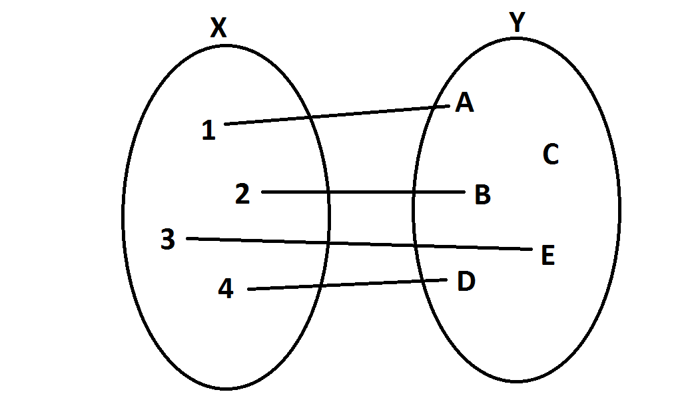

Funkcja - co to takiego?

Definicja: Przyporządkowanie elementom jednego zbioru X elementów drugiego zbioru Y w taki sposób, że każdemu elementowi x\inX odpowiada dokładnie jeden element y\inY.
Definicja alternatywna: Każdy zbiór f par uporządkowanych (x, y) takich, że x∈X i y∈Y o tej własności, że dla każdego elementu x istnieje dokładnie jeden element y taki, że (x, y)∈f. Zatem jeżeli (x, y)∈f oraz (x, z)∈f, to y = z.
Pojęcia równoznaczne: odwzorowanie, operacja, przekształcenie